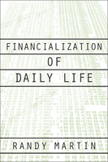

<body bgcolor="#FFFFFF" text="#000000" link="#0000FF" vlink="#CC0000" alink="#CC0000"><center><hr width="350" size="1" align="center" noshade>How investment banking and playing the market moved from Wall Street to Main Street<hr width="350" size="1" align="center" noshade><p><a href="https://cdcshoppingcart.uchicago.edu/Cart/ChicagoBook.aspx?ISBN=9781566399876&&PRESS=temple" target="_top">Buy this book!</a> | <a href="https://cdcshoppingcart.uchicago.edu/Cart/Cart.aspx?PRESS=temple" target="_top">View Cart</a> | <a href="https://cdcshoppingcart.uchicago.edu/Cart/Cart.aspx?PRESS=temple" target="_top">Check Out</a></p><p></p></center><!--none//--><h1>Financialization of Daily Life</h1>
<h3>Randy Martin</h3>
<P>cloth 1-56639-987-4 $70.50, Oct 02, <FONT COLOR=#990033>Available</FONT>
<br>paper 1-56639-988-2 $28.95, Oct 02, <FONT COLOR=#990033>Available</FONT>
<br>Electronic Book 1-43990-597-5 $28.95 <FONT COLOR=#990033>Available</FONT>
<BR> 240 pp
5.5x8.25
</P><h3 align="center"><P><font color="#996633">Randy Martin is the recipient of the American Sociological Association's Marxist Sociology Lifetime Achievement Award,
2015</font></P>
</H3>
<BLOCKQUOTE><I>"By 'financialization,' Martin refers to the influence of financial calculations and judgments, and his valuable starting point is that financialization, having fundamentally altered American business over the past four decades, is well on its way to doing the same to other areas of U.S. life....His themes are superb. Martin shows how economic change operates as much at the level of lived experience as it does at the level of ideology and his arguments should interest anyone concerned with the impact of
financialization on recent art and criticism."</I>
<br>&#151<b>Chris Newfield</b>, Dept. of English, University of California, Santa Barbara<I></I></BLOCKQUOTE>
<p>While trillions of dollars came and went in the stock market boom of the 1990s, the image of "every man and woman a CEO" may turn out to be the era's lasting legacy. Business news, once reserved to specialized papers or sections of the larger news of the day, came to the forefront in cable television and in cultural images of how ordinary people, through the internet and other avenues could not only master their financial life, but move money and equity around with the ease of a financial titan. <I>Financialization of Daily Life</I> looks at how this transformation occurred, and how it is just now becoming a significant, and troubling, aspect of our political and cultural life.
<p>Randy Martin takes us through all of the aspects of our "financialization." He examines how the shift in economic life arose not only from changes in culture, but also from new policy priorities that emphasize controlling inflation over promoting growth. He offers a close reading of self-help literature that teaches parents how to rear financially literate children and to instruct adults in the fundamentals of fiscal management. He examines just what a society that treats financial investment as a national past time really looks like, and how that society is transforming the world.
<p>In a country rocked by scandals in accounting and banking, the identification ordinary citizens make with, and the risk with which they engage in, the stock market calls into question the very basis of our economic system. Randy Martin spells out in clear terms the implications our financial doings&#151and undoing&#151have for the way we organize our lives, and, especially, our money.
<BR>&nbsp;<h2>Excerpt</h2><P>Excerpt available at <a href="http://www.temple.edu/tempress">www.temple.edu/tempress</a></p>
<BR>&nbsp;<h2>Reviews</h2>
<p><i>"[T]his is an important book which deserves to be widely read."</i>
<br>&#151<b><i><a href="http://www.findarticles.com/p/articles/mi_m0CYZ/is_4_30/ai_111933200" target="new">The Journal of Sociology and Social Welfare</a></i></b>
<p><i>"[Randy Martin] must be applauded for his many courageous forays into the literature of financial self-management, and for the often entertainingly grotesque examples he has brought back from those expeditions."</i>
<br>&#151<b><i>Science and Society</i></b>
<p><i>"Randy Martin's </i>Financialization of Daily Life<i> is deeply immersed in its historical place and time, and as such it confronts the reader with a provocative combination of recognition and disorientation."</i>
<br>&#151<b><i>Culture Machine</i></b>
<BR>&nbsp;<h2>Contents</h2><P>
<p>Acknowledgments
<br>Introduction: What in the World Is Financialization?
<br>1. Too Much of a Good Thing?
<br>2. When Finance Becomes You
<br>3. Risking the World
<br>4. The New Divisions: A Geography Reconfigured
<br>Notes
<br>Index
</P><BR>&nbsp;<H2>About the Author(s)</H2>
<table><tr><td valign="top"><img src="/tempress/authors/1615_au.gif" height="90" width="75"></td><td width="100%" valign="middle"><p><b>Randy Martin</b> (1957�2015) was Professor of Art and Public Policy and Associate Dean of Faculty and Interdisciplinary Programs at New York University. He is the author and editor of seven books, including, most recently, <i><a href="2155_reg.html" target="_top">Under New Management
</a></i>.</P></td></tr></table>
<BR><H2>Subject Categories</H2>
<p><A HREF="/tempress/american.html" TARGET="_top">American Studies</a>
<BR><A HREF="/tempress/sociology.html" TARGET="_top">Sociology</a>
<BR><A HREF="/tempress/business.html" TARGET="_top">Business/Economics</a>
</p>
<BR><h2 class="inpageheading">In the series</H2>
<P><I><a href="http://www.temple.edu/tempress/labor_crisis.html" onMouseOver="window.status='Click for other books in this series!'; return true;" onMouseOut="window.status=''; return true;" target="_top">Labor in Crisis</a></i>, edited by Stanley Aronowitz.
</p><p>The hope for a revived progressive movement in American politics and culture depends to a large extent on the possibility of a revived labor movement. This series will stimulate debate and discussion about the state of the American labor movement and its relation to the future of America by publishing short, provocative books that offer varying analyses and prescriptions for labor's revival as well as diverse assessments of its prospects. Books in the series will be relevant to a vision of the labor movement that presupposes movements and people who care about the chances of more equality, more democratic participation in the institutions of political and social life, and more power for those traditionally excluded from economic and political decision making.</p>
<p align="center"><a href="https://cdcshoppingcart.uchicago.edu/Cart/ChicagoBook.aspx?ISBN=9781566399876&&PRESS=temple" target="_top">Buy this book!</a> | <a href="https://cdcshoppingcart.uchicago.edu/Cart/Cart.aspx?PRESS=temple" target="_top">View Cart</a> | <a href="https://cdcshoppingcart.uchicago.edu/Cart/Cart.aspx?PRESS=temple" target="_top">Check Out</a></p><p><font face="Arial" size="1"><a href="copyright.html" onMouseOver="window.status='Web Copyright Policy';return true;" onMouseOut="window.status=''" title="Web Copyright Policy">&copy;</a> 2015 <a href="http://www.temple.edu" target="new" onMouseOver="window.status='Link to Temple University home page';return true;" onMouseOut="window.status=''" title="Link to Temple University home page">Temple University</a>. All Rights Reserved. http://www.temple.edu/tempress/titles/1615_reg.html</font></p>